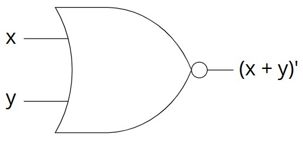

Logic Gates: NOR
The NOR (= "not or") logic gate takes two bits as an input. Its output follows the rule: "if both bits are $0$, output $1$; otherwise, output $0$." You can implement it in your code as follows: given the Boolean variables x and y, then !(x || y) means "x nor y". Below is the black-box representation of the NOR gate and its truth table.
Bonus question: How can we build a NOR gate if we know how to build NOT, AND, OR, XOR, and NAND gates?

NOR Gate: black-box representation. Miriam Briskman, CC BY-NC 4.0.
| Input | Output | |
|---|---|---|
| x | y | (x + y)' |
| $0$ | $0$ | $1$ |
| $0$ | $1$ | $0$ |
| $1$ | $0$ | $0$ |
| $1$ | $1$ | $0$ |
 These notes by Miriam Briskman are licensed under CC BY-NC 4.0 and based on sources.
These notes by Miriam Briskman are licensed under CC BY-NC 4.0 and based on sources.